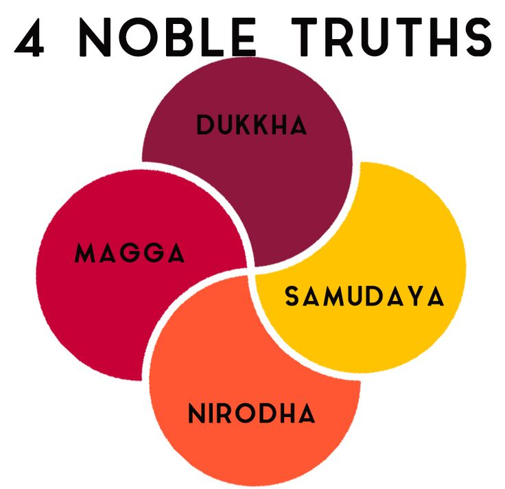

Who Was Gautama Buddha?
Gautama Buddha, also known as Siddhartha Gautama or Shakyamuni Buddha, was an ancient Indian teacher whose teachings became the foundation of Buddhism. He lived and taught in northern India, probably sometime during the first millennium BCE, although the exact dates of his birth and death remain uncertain and continue to be discussed by historians.
The title Buddha means "awakened one" or "one who has awakened." In the Buddhist tradition surrounding Gautama, the title refers to a person who attained awakening through a profound understanding of the nature of existence and then taught a path intended to help others overcome ignorance, suffering, and the cycle of continued rebirth.
Gautama's teachings emerged within the diverse intellectual and religious environment of ancient India, where questions concerning suffering, liberation, karma, rebirth, meditation, and the nature of the self were already subjects of serious inquiry. His teaching developed distinctive answers to these questions and became the foundation of a major philosophical and religious tradition that later spread throughout Asia and beyond.
A central concern of the Buddha's teaching is the problem of suffering, often discussed through the Sanskrit and Pali concept of dukkha. He examined the causes of human dissatisfaction and distress and taught that ignorance, craving, and attachment play important roles in the continuation of suffering. The path he taught was therefore concerned with understanding both the causes of suffering and the possibility of liberation from it.
Gautama Buddha's thought addresses a wide range of philosophical questions, including impermanence, desire, human identity, ethical conduct, meditation, knowledge, consciousness, and liberation. Later Buddhist philosophers developed and debated these teachings in increasingly sophisticated ways, producing major traditions of ethics, metaphysics, epistemology, logic, and philosophy of mind that continue to influence philosophical thought today.
Gautama Buddha: Quick Facts
- Name — Siddhartha Gautama; also known as Gautama Buddha and Shakyamuni
- Historical period — Ancient India; exact dates are uncertain
- Region — Northern Indian subcontinent
- Tradition — Buddhism
- Meaning of Buddha — "Awakened one"
- Central concern — Understanding suffering and the path to its cessation
- Major teachings — Four Noble Truths, Noble Eightfold Path, Middle Way, impermanence, and non-self
- Goal of the path — Liberation and Nirvana
- Philosophical importance — A foundational figure in Indian Buddhist philosophy
Gautama Buddha and Ancient Indian Philosophy

Gautama Buddha lived during a period of major intellectual, religious, and social development in ancient India. Questions concerning suffering, death, rebirth, karma, liberation, and the nature of the self were being explored by a variety of teachers and communities. The Buddha's teachings therefore emerged within an already active and diverse environment of philosophical and religious inquiry.
Various wandering teachers and ascetic communities are commonly associated with the śramaṇa traditions. These movements included groups that questioned aspects of established ritual life and pursued liberation through different forms of ethical discipline, asceticism, meditation, philosophical inquiry, and renunciation. Buddhism developed in dialogue and sometimes in disagreement with this wider intellectual world.
Buddhist sources present Gautama as engaging with this broader world of ascetic and philosophical practice. Traditional accounts describe him as studying under teachers and experimenting with severe ascetic disciplines before concluding that extreme self-mortification did not provide the path to liberation he was seeking. These experiences became important to the traditional understanding of his later teaching.
The rejection of extreme indulgence and extreme asceticism became associated with what Buddhism calls the Middle Way. In its earliest formulation, this idea is closely connected with avoiding destructive extremes and following a disciplined path directed toward understanding, ethical conduct, meditation, and liberation from suffering.
The Buddha's distinctive contribution was therefore not simply the observation that human beings suffer, since suffering and liberation were already important subjects in ancient Indian thought. His teaching developed a particular analysis of dukkha, its causes, the possibility of its cessation, and the practical path through which liberation could be pursued. These ideas later became central to Buddhist philosophy.
Life of Gautama Buddha
Reliable historical information about Gautama Buddha's life is limited, and much of the familiar biography comes from Buddhist texts and traditions transmitted after his lifetime. Nevertheless, historians generally place him in the cultural world of northern India during the first millennium BCE, although the precise chronology of his life remains uncertain.
Traditional Buddhist biographies describe Gautama as belonging to the Shakya clan and associate his early life with a relatively privileged social environment. The traditional narrative presents him as becoming increasingly concerned with the realities of sickness, old age, death, and the instability of ordinary human existence.
These concerns are expressed in the famous traditional account of the encounters sometimes called the Four Sights. The story describes Gautama encountering old age, illness, death, and finally a religious renunciant. Although the historical details of this narrative cannot all be independently verified, it expresses central Buddhist concerns about suffering and the search for liberation.
Gautama is traditionally said to have left household life and joined other wandering ascetics in search of a solution to the problem of suffering. He is described as practicing demanding forms of meditation and severe asceticism, eventually concluding that extreme bodily self-denial did not provide the understanding and liberation he was seeking.
After abandoning extreme asceticism, Buddhist tradition holds that Gautama pursued a different path centered on meditation, ethical discipline, and insight. His eventual awakening transformed him into the Buddha, the "Awakened One," according to the traditional account. This event became the central turning point in the Buddhist understanding of his life.
Following his awakening, the Buddha is traditionally described as spending the remainder of his life teaching monks, nuns, and lay followers. A community of practitioners known as the Sangha developed around his teaching, helping preserve and transmit the ideas and practices that eventually developed into the diverse Buddhist traditions known today.
How Did Gautama Buddha Become Enlightened?
According to Buddhist tradition, Gautama attained awakening through profound meditation and insight into the nature of existence. His awakening is associated with a deep understanding of suffering, the causes that sustain it, and the possibility of liberation. This event is traditionally regarded as the foundation from which his later teaching emerged.
The Sanskrit and Pali term bodhi is commonly translated as "awakening" or "enlightenment." The term should not be understood simply as acquiring more intellectual information or accepting a set of philosophical propositions. In Buddhist thought, awakening involves a transformative understanding connected with overcoming ignorance and the conditions that perpetuate suffering.
Traditional accounts place Gautama's awakening beneath the Bodhi tree at Bodh Gaya. These narratives describe a period of sustained meditation followed by profound insight. Different Buddhist traditions preserve and interpret the details of this event in different ways, making it important to distinguish religious tradition from strictly verifiable historical reconstruction.
The philosophical significance of awakening is closely connected with the Buddhist analysis of ignorance, craving, and attachment. Human beings experience suffering partly because they misunderstand the changing nature of existence and become attached to things they seek to possess, preserve, or identify with as permanent.
The Buddha's awakening therefore became associated with insight into fundamental features of existence, including impermanence and the unstable nature of ordinary attachment. Rather than presenting liberation as merely reaching another physical place, Buddhist traditions understand awakening as a profound transformation in understanding that ends the conditions responsible for continued bondage and suffering.
Because surviving accounts of the Buddha's enlightenment were transmitted through Buddhist communities after his lifetime, individual biographical details cannot always be established with historical certainty. What is historically most significant, however, is that the tradition centered on Gautama developed around the claim that liberation from suffering was possible through a path of ethical conduct, meditation, and transformative understanding.
What Are the Four Noble Truths?
The Four Noble Truths are among the most important formulations of Buddhist teaching. They provide a structured analysis of the human problem of dukkha, its causes and conditions, the possibility of its cessation, and the practical path leading toward that cessation. In this sense, they connect philosophical understanding directly with ethical and meditative practice.
The Four Noble Truths are sometimes compared to a diagnostic process. First, a problem is identified; second, its causes are examined; third, the possibility of overcoming the problem is recognized; and finally, a path of practice is described. This structure reflects the practical orientation of early Buddhist teaching toward understanding and transforming the conditions associated with suffering.
1. The Truth of Suffering
The first truth recognizes dukkha, a term commonly translated as suffering, unsatisfactoriness, stress, or dissatisfaction. The teaching is not simply the claim that every moment of life is painful. Rather, it draws attention to the fact that conditioned existence is marked by instability and cannot provide permanent satisfaction.
Experiences that human beings value can change or disappear, while unwanted experiences can arise despite personal wishes and efforts. Buddhist teaching therefore connects dukkha with birth, aging, illness, death, loss, frustration, and attachment. The deeper philosophical concern is the instability of trying to find lasting security in things that are themselves subject to change.
2. The Origin of Suffering
The second truth explains that suffering has causes and conditions. A central element in the traditional analysis is craving, the persistent tendency to seek, grasp, preserve, or resist particular experiences. Craving can take different forms, including the desire for pleasure, continued existence, or the removal of unwanted experience.
Ignorance also plays an important role in Buddhist explanations of suffering. Human beings may misunderstand the changing and conditioned nature of existence and become attached to experiences, identities, and possessions as though they could provide permanent security. Craving and ignorance therefore help sustain patterns of attachment and dissatisfaction.
3. The Cessation of Suffering
The third truth states that dukkha can cease when the causes and conditions that sustain it are brought to an end. If suffering arises dependently through particular causes, Buddhist teaching holds that its continuation is not inevitable. This creates the possibility of liberation rather than presenting human suffering as permanent or unavoidable.
This cessation is associated with Nirvana, although the concept has been interpreted in different ways throughout Buddhist history. In early Buddhist teaching, Nirvana is closely connected with the ending of craving, ignorance, and the conditions that perpetuate suffering. It should not simply be understood as an ordinary place or temporary emotional state.
4. The Path Leading to the Cessation of Suffering
The fourth truth identifies a practical path leading toward the cessation of suffering. This path is traditionally described as the Noble Eightfold Path, which brings together wisdom, ethical conduct, and mental discipline. Liberation is therefore presented not merely as a theoretical belief but as something connected with the transformation of understanding and practice.
The eight elements of the path should not be understood simply as isolated rules completed one after another. They are interconnected aspects of a broader way of life involving how a person understands reality, develops intentions, acts toward others, cultivates the mind, and practices meditation. Together, the Four Noble Truths became one of the central frameworks of Buddhist philosophy and practice.

The Four Noble Truths provide a framework for understanding the relationship between suffering, its causes, its cessation, and practical transformation. Their importance lies partly in the fact that they connect philosophical analysis with a path of ethical conduct, mental cultivation, and direct investigation of human experience.
Rather than asking followers merely to accept that suffering exists, the Buddhist approach encourages examination of how attachment, craving, ignorance, and changing conditions operate within experience. The Four Noble Truths therefore function both as a general account of the human condition and as a practical framework for investigating the possibility of liberation.
Throughout the history of Buddhism, different traditions have interpreted and developed these teachings in diverse ways. Nevertheless, the basic structure of identifying suffering, understanding its origin, recognizing its cessation, and following a path of practice has remained one of the most recognizable foundations of Buddhist thought.
What Is the Noble Eightfold Path?
The Noble Eightfold Path describes the practical path associated with the fourth of the Four Noble Truths. It provides a broad framework for transforming the ways in which a person understands, intends, speaks, acts, and develops the mind. The path is traditionally organized into three interconnected areas: wisdom, ethical conduct, and mental discipline.
The term "right" in the traditional translation of the eight factors should not be understood merely as a list of rigid commands in the modern sense. The underlying idea concerns what is appropriate, skillful, or conducive to the path toward liberation. The different elements are intended to support one another rather than function as completely separate stages.
- Right View — developing an understanding of reality, particularly in relation to suffering, its causes, and the possibility of liberation.
- Right Intention — cultivating intentions associated with renunciation, goodwill, compassion, and harmlessness rather than harmful desire and hostility.
- Right Speech — avoiding harmful forms of speech such as deliberate falsehood, malicious speech, and other forms of communication that unnecessarily cause harm.
- Right Action — practicing ethical conduct and avoiding actions that cause serious harm to oneself or others.
- Right Livelihood — pursuing a livelihood consistent with ethical principles and avoiding occupations that directly involve serious harm.
- Right Effort — making a sustained effort to reduce harmful mental tendencies and cultivate beneficial qualities within the mind.
- Right Mindfulness — developing attentive awareness of experience, including the body, feelings, mental states, and patterns of thought.
- Right Concentration — developing stable and disciplined states of meditative concentration that support deeper attention and insight.
The Eightfold Path demonstrates that the Buddhist path to liberation is not limited to meditation alone. Ethical behavior, the cultivation of intention, intellectual understanding, mindfulness, and concentration are all treated as interconnected aspects of practice. A transformation of consciousness is therefore connected with the way a person lives and acts within the world.
The path is also generally understood as something to be developed rather than completed once and permanently finished. Buddhist traditions have interpreted its practices in different ways, but the central principle remains that liberation involves a gradual or transformative cultivation of wisdom, ethical conduct, and mental discipline directed toward the ending of suffering.
What Is the Middle Way in Buddhism?
The Middle Way is a central idea associated with Gautama Buddha's teaching. In its early formulation, it describes a path that avoids two extremes: indulgence in sensual pleasure and severe self-mortification. According to Buddhist tradition, Gautama rejected both extremes as inadequate for the attainment of liberation.
The Middle Way is closely connected with the Noble Eightfold Path, which provides a practical framework involving wisdom, ethical conduct, and mental discipline. It should therefore not be understood simply as choosing a moderate position between any two opinions.
Buddhist philosophical traditions also developed the idea of a middle path in relation to certain metaphysical extremes. Discussions of eternalism and annihilationism, for example, became important in Buddhist attempts to explain identity, causation, continuity, and the nature of existence without accepting an eternal and unchanging self.
Later Buddhist schools developed these philosophical implications in different ways. The Madhyamaka tradition, in particular, became famous for its analysis of the Middle Way in relation to emptiness, dependent origination, and the rejection of fixed inherent nature.
The Middle Way therefore refers both to a practical path of discipline and, in later Buddhist philosophy, to methods of avoiding conceptual extremes that can distort an understanding of reality.
What Did Buddha Teach About Suffering?
The problem of dukkha is central to Gautama Buddha's teaching. The term is often translated as "suffering," but its meaning is broader than physical or emotional pain. Depending on the context, it can also refer to dissatisfaction, unsatisfactoriness, stress, or the inability of conditioned things to provide lasting fulfillment.
Buddhist teaching does not simply claim that every moment of life is painful. Rather, it draws attention to the fact that experiences and conditions are subject to change and therefore cannot provide permanent security or complete satisfaction.
The Buddhist analysis does not stop with the recognition of dukkha. The Four Noble Truths examine its origin, the possibility of its cessation, and the path leading toward that cessation. Craving is given a central role in the traditional account, while ignorance is also deeply connected with the conditions that sustain suffering.
In this sense, Buddha's teaching is fundamentally practical as well as philosophical. Understanding suffering means investigating its causes and examining whether the patterns that produce dissatisfaction can be transformed and ultimately brought to an end.
This focus on causes and conditions became one of the distinctive features of Buddhist thought. Rather than treating suffering as an unavoidable fate, Buddhist philosophy investigates how it arises and whether liberation from it is possible.
What Did Buddha Teach About Impermanence?
Impermanence, known as anicca in Pali and anitya in Sanskrit, is one of the central ideas of Buddhist philosophy. Buddhist teachings emphasize that conditioned phenomena arise through causes and conditions and are therefore subject to change.
Human bodies, sensations, emotions, thoughts, relationships, and circumstances do not remain permanently fixed. Even experiences that are pleasant and deeply valued are subject to change and eventually pass away.
Recognizing impermanence is important to the Buddhist analysis of dukkha. When human beings seek permanent security or lasting satisfaction in things that are themselves changing, attachment can become a source of dissatisfaction and distress.
Buddhist reflection on impermanence is therefore not simply an abstract claim that everything changes. It is connected with a practical investigation of attachment, identity, expectation, and the ways people respond to changing experience.
Impermanence also became important to later Buddhist philosophical discussions of the self. If the elements that make up human experience are continually changing, Buddhist philosophers asked whether there is any permanent and unchanging self underlying those processes. This question became closely connected with the doctrine of non-self, or anatta/anatman.
What Is Anatta or the Buddhist Teaching of Non-Self?
Anatta, or non-self, is one of the most important and philosophically distinctive teachings associated with early Buddhism. The Sanskrit equivalent is anatman. The teaching challenges the assumption that there is an eternal, permanent, and unchanging self underlying human experience.
Buddhist analysis examines the different processes and components that make up what people ordinarily call a person. These include the physical body, sensations, perceptions, mental formations, and consciousness, traditionally discussed through the doctrine of the five aggregates.
These components are understood as changing and dependent upon causes and conditions. Early Buddhist teaching therefore encourages the practitioner not to identify any of these changing processes as a permanent and independent self.
The teaching of non-self should not simply be reduced to the statement that "nothing exists." Buddhism does not deny the ordinary existence of persons and experiences in every meaningful sense. Rather, it challenges the idea that investigation will reveal an eternal and unchanging essence that exists independently behind the changing processes of experience.
The precise philosophical interpretation of the Buddha's teaching on self has been debated by Buddhist philosophers and modern scholars. Questions about personal identity, continuity, consciousness, karma, and rebirth became important subjects in the later development of Buddhist philosophy.
What Did Buddha Teach About Karma and Rebirth?
Karma and rebirth were important parts of the intellectual environment in which Buddhism developed. In Buddhist teaching, karma is closely connected with intentional action. Actions of body, speech, and mind are understood as having consequences within the broader causal structure of human existence.
Karma should therefore not be understood simply as a system of reward and punishment imposed by a creator deity. Buddhist traditions generally explain karmic results through moral causation and the consequences associated with intentional actions.
Buddhist teachings connect karma with rebirth and the continuation of conditioned existence, or samsara. However, this raises an important philosophical question because Buddhism also rejects the idea of an eternal and unchanging self that permanently passes from one life to another.
Buddhist traditions therefore developed different explanations of continuity. The general principle is that rebirth should not be understood simply as the migration of an unchanging soul from one body into another. Instead, later Buddhist philosophers explored models of causal continuity involving changing physical and mental processes.
The relationship between karma, rebirth, and non-self became one of the major philosophical problems explored within Buddhist thought. Different Buddhist schools developed distinct approaches to questions of personal identity and continuity while maintaining the central importance of causation and moral responsibility.
What Is Nirvana in Buddhist Philosophy?
Nirvana, known as nibbana in Pali, is the central goal of the Buddhist path. It is associated with liberation from the conditions that sustain dukkha, or suffering and unsatisfactoriness.
In the context of the Four Noble Truths, Nirvana is connected with the cessation of suffering through the ending of the conditions that give rise to it. Craving occupies a central role in this traditional analysis, while ignorance is also closely connected with the continuation of conditioned existence.
Nirvana should not simply be understood as a physical place or as ordinary death. In Buddhist philosophy, it refers to liberation and the cessation of the processes that perpetuate bondage and continued suffering.
Buddhist traditions developed different philosophical interpretations and explanations of Nirvana over the centuries. As Buddhism developed into different schools, questions concerning the nature of liberation, consciousness, existence, and ultimate reality received increasingly sophisticated and sometimes different answers.
Despite these differences, Nirvana remains fundamentally connected with liberation from the cycle of conditioned existence. It represents the goal toward which Buddhist ethical practice, meditation, wisdom, and philosophical understanding are traditionally directed.
Buddha's Philosophy of Ethics and Compassion
Ethical conduct is an essential part of the Buddhist path. Buddhist teachings connect ethical action with the reduction of harm and the cultivation of wholesome qualities such as compassion, loving-kindness, generosity, restraint, and non-harm.
Buddhist ethics is not presented simply as a collection of rules imposed for their own sake. Actions of body, speech, and mind are examined in relation to their intentions and consequences, particularly their role in producing suffering or contributing to well-being.
Ethical conduct is also closely connected with mental cultivation. Harmful actions and destructive mental states can contribute to conflict and suffering, while ethical discipline is understood as helping create the conditions for concentration, clarity, and insight.
The importance of compassion reflects a broader Buddhist concern with the suffering of other beings. Different Buddhist traditions developed this concern in different ways, with later Mahayana traditions placing particular emphasis on the ideal of the bodhisattva, who seeks awakening in connection with the liberation of other beings.
This relationship between ethical conduct, mental discipline, and wisdom is reflected in the structure of the Noble Eightfold Path. Buddhist practice therefore treats ethical transformation as closely connected with the wider path toward liberation.
Buddha's Teachings on Meditation and Mindfulness
Meditation plays an important role in Buddhist practice and is closely connected with the cultivation of concentration, mindfulness, and insight. In Buddhist traditions, mental training is generally understood as part of a broader path of ethical and philosophical transformation.
Early Buddhist teachings contain practices concerned with the development of attentive awareness and concentrated states of mind. Buddhist traditions later developed a wide variety of meditation methods, terminology, and systems of practice.
Mindfulness, commonly associated with the Pali term sati, involves careful awareness of aspects of experience. In Buddhist contexts, however, mindfulness should not automatically be equated with every modern secular practice that uses the same word.
Meditation is closely connected with insight into the changing and conditioned nature of experience. Buddhist practice investigates such questions as impermanence, attachment, suffering, and the tendency to identify changing processes as a permanent self.
Meditation should therefore not be understood merely as a technique for relaxation or stress reduction. Within Buddhist philosophy and practice, it forms part of a wider path involving ethical conduct, mental discipline, wisdom, and liberation.
Was Gautama Buddha a Philosopher?
Whether Gautama Buddha should be classified as a philosopher in the modern academic sense depends partly on how philosophy itself is defined. His teachings were primarily directed toward understanding and overcoming suffering rather than toward abstract theorizing for its own sake.
Nevertheless, his teachings raise fundamental philosophical questions about reality, causation, personal identity, knowledge, perception, ethics, consciousness, and the nature of human experience.
Buddhist philosophical traditions later developed sophisticated arguments concerning these questions. Thinkers from different Buddhist schools used careful analysis and philosophical reasoning to interpret, defend, and develop ideas associated with the Buddha's teachings.
It is therefore misleading to separate Buddhism completely from philosophy simply because its teachings are connected with religious practice and liberation. Ancient Indian intellectual traditions did not necessarily maintain the same strict distinction between philosophy, religion, ethics, and spiritual practice that is often assumed in modern Western academic categories.
For this reason, Gautama Buddha can reasonably be studied as one of the foundational figures in the history of Indian philosophy, particularly when his teachings are considered alongside the major philosophical traditions that developed from Buddhism.
Gautama Buddha's Contribution to Indian Philosophy
Gautama Buddha's teachings became the foundation for a long and diverse tradition of Indian Buddhist philosophy. Buddhist thinkers subsequently developed sophisticated arguments concerning the nature of persons, perception, knowledge, causation, reality, language, and liberation.
One of Buddhism's most important philosophical contributions was its sustained examination of impermanence, personal identity, and dependent causation. The questions raised by the Buddha's teachings challenged assumptions about the existence of a permanent self and encouraged new ways of understanding the relationship between human experience and the changing world.
The philosophical tradition that grew from Buddhism eventually produced major schools and thinkers across India and throughout Asia. Traditions such as Madhyamaka and Yogacara developed increasingly sophisticated analyses of reality, consciousness, emptiness, knowledge, and the nature of experience.
These later developments should not simply be attributed directly to the historical Buddha, because many of them arose centuries after his lifetime. Nevertheless, they developed in conversation with fundamental problems originating in early Buddhist teachings and preserved within Buddhist philosophical traditions.
Questions concerning suffering, impermanence, identity, causation, and liberation therefore became enduring subjects of philosophical debate. Through the traditions that developed from his teachings, Gautama Buddha became one of the most important foundational figures in the history of Indian philosophy.
How Do We Know About Gautama Buddha?
No writings personally authored by Gautama Buddha survive. Our knowledge of his teachings comes primarily through Buddhist textual traditions that preserved discourses, monastic rules, narratives, and philosophical material attributed to him and his early community of followers.
The earliest Buddhist teachings were transmitted orally before being written down. This means that the teachings passed through processes of memorization, recitation, preservation, and transmission before the surviving textual collections took their written form.
Different Buddhist textual traditions also preserve differences in wording, organization, and interpretation. Pali, Sanskrit, Chinese, Tibetan, and other sources provide important evidence for reconstructing the development and transmission of Buddhist thought.
Historians therefore compare different textual traditions, archaeological evidence, inscriptions, and the historical contexts in which Buddhist communities developed. This work makes it possible to study the earliest recoverable layers of Buddhist teaching, although complete certainty about every saying attributed to the historical Buddha is impossible.
It is consequently important to distinguish between the historical Gautama and the much larger body of teachings, biographies, stories, and philosophical interpretations that developed around him over subsequent centuries. Both are historically important, but they do not always provide the same kind of evidence about what the historical Buddha himself said or did.
What Do We Actually Know About the Historical Buddha?
The historical Buddha is difficult to reconstruct in complete detail because the earliest teachings and stories were transmitted orally and the surviving written records appeared later. Historians must therefore compare different Buddhist sources and distinguish between early traditions and biographical material that developed over time.
This does not mean that nothing can be known about Gautama Buddha. There is broad historical agreement that Buddhism originated around an influential teacher in ancient northern India whose teachings gave rise to a lasting religious and philosophical tradition.
At the same time, the evidence does not allow every detail of the traditional biography to be treated with equal certainty. Stories about his childhood, awakening, travels, miracles, and encounters belong to different layers of Buddhist tradition and must be evaluated according to their historical sources.
The distinction between relatively well-established evidence, traditional reports, and historical uncertainty helps provide a clearer picture of what scholars can reasonably say about the historical Buddha while respecting the importance of the traditions that preserved his memory and teachings.
Relatively Well Established
- Gautama is remembered as an influential teacher in ancient northern India.
- His teachings became the foundation of the Buddhist tradition.
- The Buddhist tradition centers on liberation from suffering.
- Early Buddhist teachings include the Four Noble Truths and a path of practice leading toward liberation.
Traditionally Reported
- Detailed stories concerning Gautama's childhood and privileged upbringing.
- The precise sequence of events surrounding his renunciation and awakening.
- Many details of his travels and encounters with particular individuals.
Historically Uncertain
- The exact dates of Gautama Buddha's birth and death.
- The exact wording of every teaching attributed to him.
- The historical accuracy of later legendary elements in Buddha's biographies.
- The precise extent to which later Buddhist philosophical ideas reproduce the historical Buddha's own views.
A Famous Teaching Associated with Buddha
"All conditioned things are impermanent."
Frequently Asked Questions About Gautama Buddha
Who was Gautama Buddha?
Gautama Buddha was an ancient Indian teacher whose teachings became the foundation of Buddhism. He is associated with a path of liberation from suffering through ethical conduct, mental cultivation, and insight.
What is Gautama Buddha famous for?
Gautama Buddha is especially known for the Four Noble Truths, the Noble Eightfold Path, the Middle Way, and teachings concerning suffering, impermanence, non-self, and liberation.
What did Buddha teach?
Buddha's teachings focused on understanding suffering, its causes, its cessation, and the path leading toward liberation. The Four Noble Truths provide one of the most important summaries of these teachings.
What are the Four Noble Truths?
The Four Noble Truths concern suffering, the origin of suffering, the cessation of suffering, and the path leading to its cessation.
What is the Eightfold Path?
The Noble Eightfold Path is the Buddhist path associated with the cessation of suffering. It includes right view, intention, speech, action, livelihood, effort, mindfulness, and concentration.
What is the Middle Way taught by Buddha?
The Middle Way is an approach that avoids extremes such as sensual indulgence and severe self-mortification. It is also connected with avoiding certain extreme philosophical positions.
What did Buddha teach about suffering?
Buddha taught that suffering or dukkha is a central problem of conditioned existence and that it has causes that can be understood and brought toward cessation.
What is anatta in Buddhism?
Anatta, or non-self, refers to the Buddhist teaching that rejects the idea of a permanent, unchanging self underlying conditioned experience.
What is Nirvana according to Buddha?
Nirvana is associated with liberation and the cessation of the conditions that sustain suffering and continued conditioned existence.
Did Buddha believe in karma and rebirth?
Karma and rebirth are important elements of early Buddhist teachings. Buddhist traditions explain karma primarily through intentional action and its consequences within the process of conditioned existence.
Was Buddha a philosopher?
Buddha can be studied as a foundational figure in Indian philosophy, although his teachings were primarily directed toward liberation rather than abstract philosophical speculation. Later Buddhist philosophers developed extensive philosophical systems from his teachings.
Did Gautama Buddha write any books?
No surviving books were personally written by Gautama Buddha. His teachings were preserved through oral transmission and later Buddhist textual traditions.
Why is Gautama Buddha important in Indian philosophy?
Buddha's teachings generated one of India's most influential philosophical traditions, raising enduring questions about suffering, personal identity, causation, knowledge, reality, ethics, and liberation.
Related Indian Philosophers and Thinkers
Gautama Buddha belongs to a much larger history of Indian philosophy. Explore thinkers who developed Buddhist, Jain, Hindu, and other philosophical traditions in the Indian intellectual world.
Philosophical Traditions Connected to Buddha
Buddha's teachings became the foundation of Buddhist philosophy and influenced centuries of philosophical debate in India and across Asia. His ideas can be studied in connection with questions in ethics, metaphysics, epistemology, philosophy of mind, and the philosophy of religion.
Why Gautama Buddha Still Matters
Gautama Buddha remains one of the most influential thinkers in the history of Indian philosophy and world thought. His analysis of suffering, impermanence, desire, identity, ethical action, and liberation created a philosophical tradition that continued to develop for more than two millennia.
The enduring significance of Buddha's philosophy lies not only in the doctrines associated with him but also in the questions he placed at the center of philosophical inquiry: Why do human beings suffer? What causes dissatisfaction? What makes a person who they are? Can suffering cease? And what kind of life leads toward liberation?
Later Indian Buddhist philosophers would offer increasingly complex answers to these questions, while thinkers from other Indian traditions would challenge and reinterpret Buddhist ideas. The resulting debates became one of the richest philosophical developments in Indian intellectual history.
Explore Great Philosophers